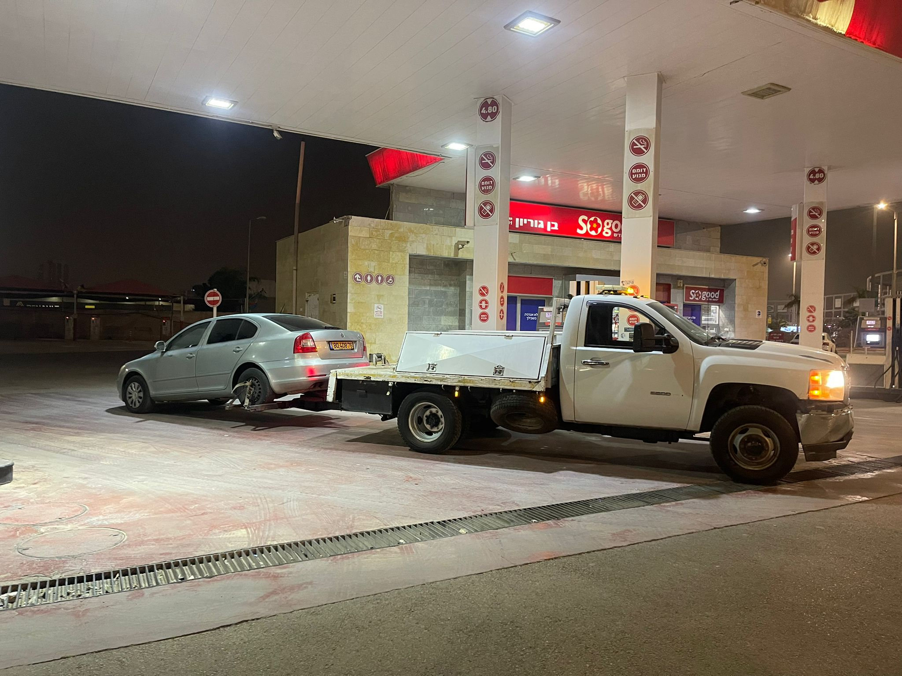

רכב חשמלי נראה כמו כל רכב אחר, אבל כשהוא צריך גרירה הכללים משתנים. גרירה בשיטה הלא נכונה עלולה לגרום נזק יקר למערכת ההנעה, ולפעמים נזק כזה אפילו לא מכוסה באחריות היצרן. במדריך הזה נסביר מה שונה ברכב חשמלי, אילו שיטות גרירה בטוחות, ומה כדאי להכין לפני שמתקשרים לגרר.
מה שונה ברכב חשמלי?
ברכב בנזין רגיל אפשר בדרך כלל להעביר את תיבת ההילוכים לניוטרל, וכך הגלגלים מסתובבים בלי לסובב את המנוע. ברכב חשמלי המצב אחר: המנוע החשמלי מחובר לגלגלי ההנעה דרך תמסורת קבועה, ואין "ניוטרל" מכני אמיתי.
המשמעות היא שכאשר גלגלי ההנעה מסתובבים על הכביש, גם המנוע מסתובב, וכשמנוע חשמלי מסתובב הוא מייצר חשמל. בזמן גרירה הרכב לא תמיד ערוך לנהל את החשמל הזה, והתוצאה עלולה להיות חימום ועומס על רכיבי ההנעה והאלקטרוניקה. לכן רוב יצרני הרכב החשמלי מבקשים במפורש לא לגרור את הרכב כשגלגלי ההנעה נוגעים בכביש.
מה יכול להשתבש בגרירה לא נכונה
- עומס על מערכת ההנעה: המנוע והתמסורת מסתובבים בלי שהרכב מתוכנן לכך.
- נזק למערכת החשמל: החשמל שהמנוע מייצר מגיע למערכות שלא מצפות לו.
- רכב נעול: רכבים חשמליים רבים נועלים את הגלגלים כשהם כבויים או כשהסוללה ריקה, וגרירה בכוח שוחקת צמיגים ובלמים.
- רכב 4x4 חשמלי: בדגמים עם מנוע על כל סרן, אין סרן "חופשי" שאפשר להשאיר על הכביש.
הכלל הפשוט: ברכב חשמלי כל הגלגלים צריכים להיות מעל הכביש בזמן הגרירה, אלא אם ספר הרכב אומר אחרת במפורש. תמיד כדאי לבדוק את פרק הגרירה בספר הרכב של הדגם שלכם.
גרר משטח או דולי?
יש שתי דרכים מקובלות להוביל רכב חשמלי בלי שהגלגלים יסתובבו על הכביש:
גרר משטח (רמסע)
הרכב נמשך על משטח שטוח ונוסע עליו כולו. זו שיטה טובה ובטוחה, אבל היא דורשת מקום לתמרון, זווית עלייה מתאימה וגובה פנוי. בחניון תת-קרקעי, ברחוב צר או עם רכב נמוך במיוחד, משטח לא תמיד יכול להגיע או להעלות את הרכב בלי שפשוף.
גרר עם דולי
בגרירה עם דולי מרימים סרן אחד של הרכב בזרוע הגרר, ומתחת לגלגלי הסרן השני מניחים עגלות קטנות (דולי). כך אף גלגל לא מסתובב על הכביש, בדיוק כמו במשטח, אבל עם גרר קומפקטי שנכנס למקומות שמשטח לא נכנס אליהם.

מתי דולי הוא הבחירה הנכונה
- חניון תת-קרקעי: כשהתקרה נמוכה מדי לגרר משטח או כשהרמפות תלולות וצרות.
- רחוב צפוף: כשאין מקום להוריד משטח מאחורי הרכב.
- רכב נמוך: כשזווית העלייה למשטח עלולה לשפשף פגוש או תחתית.
- רכב תקוע במקום: כשהרכב לא מתניע או לא משתחרר מחנייה, ועגלות מתחת לגלגלים מאפשרות להזיז אותו בעדינות.
- נסיעה עירונית קצרה: לעמדת טעינה, למוסך או הביתה.
לנסיעות ארוכות מאוד או למקרים חריגים, לפעמים משטח יתאים יותר. אנחנו תמיד בודקים את סוג הרכב ואת המקום לפני שמחליטים, ואם דולי לא מתאים נגיד את זה מראש.
מה להכין לפני שמזמינים גרר לרכב חשמלי
- דגם ושנת הרכב, כולל האם הוא הנעה קדמית, אחורית או כפולה.
- מיקום מדויק: כתובת, ואם מדובר בחניון, גם קומה וגובה מעבר אם ידוע.
- מצב הרכב: האם הוא נדלק, האם הסוללה ריקה, האם המסכים עובדים.
- יעד: עמדת טעינה, מוסך, מרכז שירות או בית.
- מצב גרירה: בדגמים רבים יש "מצב גרירה" או "מצב הובלה" בתפריט. אם אפשר, כדאי לבדוק בספר הרכב איך מפעילים אותו.
שאלות נפוצות
אפשר לגרור רכב חשמלי עם מוט או כבל?
ברוב הדגמים לא, כי גלגלי ההנעה מסתובבים על הכביש. גם אם זה רק לכמה מטרים, עדיף לבדוק בספר הרכב לפני.
האם אפשר לגרור רכב חשמלי כשהסוללה ריקה לגמרי?
כן. במקרה כזה הגלגלים לרוב נעולים, ולכן דולי או משטח הם הדרך להזיז את הרכב בלי לגרור אותו בכוח. קראו גם את המדריך שלנו מה עושים כשנגמרה הסוללה ברכב חשמלי.
האם זה מתאים גם לרכבי AWD ו-4x4 רגילים?
כן. גם ברכבי הנעה כפולה עם מנוע בנזין, גרירה עם סרן אחד על הכביש עלולה לפגוע בתמסורת, ולכן אותם עקרונות חלים.